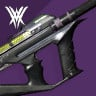
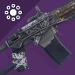
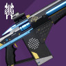
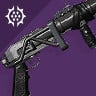
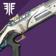

Garden of Salvation
Equipment recommendations. They are not absolute and only serve a purpose of giving you a general guess about what you might want in every encounter.
1. Embrace
OVERLOAD CHAMPIONS
Close and medium combat distances
Small and medium enemies
Don't forget to adjust your gear to include anti-overload tools. Depending on available anti-champ mods, you might want to go for other weapon types


Primary: SMGs / Auto rifles
Primary weapons to destroy goblins with



Special: GLs / Fusions / Snipers
Some additional firepower to deal with minotaurs and groups of enemies quickly. Or use sniper to shoot cyclopses and hobgoblins from safe distance
Heavy: Rockets / Swords
For hydra-class mini-bosses and champions. One rocket and it's almost dead, or beat them to death
2. Conflux defence
BARRIER CHAMPIONS
Close combat distances
Small and medium enemies
Don't forget to adjust your gear to include anti-barrier tools. Depending on available anti-champ mods, you might want to go for other weapon types
Primary: SMGs / Auto rifles
Primary weapons to destroy goblins with

Special: GLs / Fusions / Shotguns
Some additional firepower to deal with minotaurs and groups of enemies quickly
Heavy: Rockets / Swords
For hydra-class mini-bosses and champions. One rocket and it's almost dead, or beat them to death
3. The Consecrated Mind
Close combat distances
Long DPS distances
Small and medium enemies
Primary: SMGs / Auto rifles
Primary weapons to destroy goblins with
Special: GLs / Fusions / Shotguns
Some additional firepower to deal with minotaurs and groups of enemies quickly
Heavy: Linear Fusion Rifles
For Boss DPS. The crit spot is easy to hit as it is, but you can add Divinity to make it even better
4. The Sanctified Mind
Medium and long combat distances
Long DPS distances
Small and medium enemies
Primary: SMGs / Auto rifles
Primary weapons to destroy goblins with
Special: Snipers / other specials
You might want a sniper to kill Cyclops-class artillery units from afar. Or bring anything else to help you and hope that your teammates will deal with those
Heavy: Linear Fusion Rifles
For Boss DPS